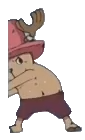
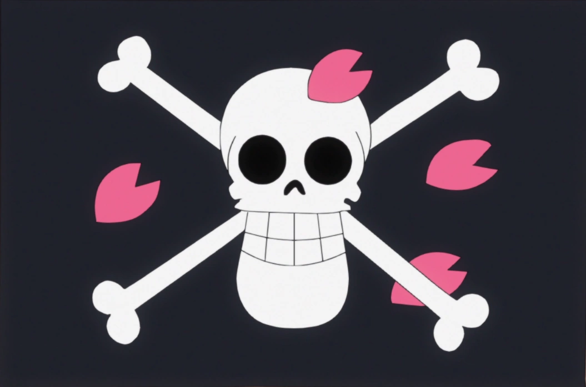

NEW!
Kung Fu Point
Aug 6
Zoro.html Is Done — Halfway There
Projects page is live, slash-split hover and all. That's five pages down, five to go — officially halfway through the crew.


A safe space for medical notes, cotton candy reviews, and Grand Line adventures!
Projects page is live, slash-split hover and all. That's five pages down, five to go — officially halfway through the crew.
Started wiring real audio into the cross-page loading screens today, kicking off from Franky's page. Placeholder clips for now until the real files get sourced, but the groundwork's in.
Saw a reel of Zoro moving completely differently from Luffy's Gear 5 energy and it clicked — that tone would make a perfect Projects page.
Picked up where the Gear 5 reel left off — started building this site for real, using that awakening page as a base and roping Claude in to help push it further than a personal project like this usually goes.
Doomscrolling turned into inspiration — found a One Piece fan's single-HTML page of Luffy's Gear 5 awakening and couldn't stop thinking about it.